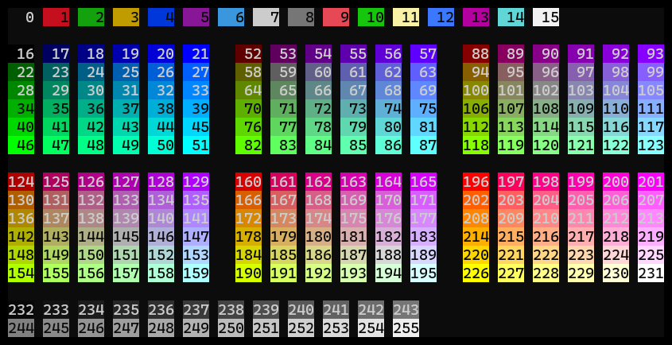

Track -- Introduction


Track is a time tracking command line tool.
Track is designed to be easy to use, and stores tracking entries in a human-readable plain-text format inspired by klog.
Features
- Track your working time from the command line
- Natural language-like syntax
- Supports hierarchical project structure
- Records stored as plain-text files for human readability and editing
- Different types of text-based and graphical reports
GitHub project
Track is Open Source and available on GitHub.
Contributing
For questions, feature requests and issues, please use the issue tracker. Merge requests are welcome.
License
Track and all its sources are released under the MIT License.
Installation
There are multiple ways to install Track:
Precompiled binaries
- Download the latest binaries for your platform
(Binaries are available for Linux, Windows and macOS) - Unzip somewhere
- Optional: add the parent directory of the executable to your
PATHenvironmental variable
From GitHub using Go
In case you have Go installed, you can install Track with go install:
go install github.com/mlange-42/track@latest
Clone and build
To build Track locally, e.g. to contribute to the project, you need to clone the repository on your local machine:
git clone https://github.com/mlange-42/track
cd into track/ and run
go build
The resulting binaries can be found in the track root directory under the name track or track.exe.
Getting started
Create a project
Any time tracking in Track is associated to a "project". Before you can start tracking, create a project:
track create project MyProject
Track time
Now, start tracking time on the project:
track start MyProject
To stop tracking, use:
track stop
Concepts
This chapter explains Track's primary concepts.
To start using Track immediately, you can skip to chapter Time tracking and come back here if something seems unclear.
Records
Time tracking entries are organized in records.
Each record is associated to a project. A record is defined as a contiguous time span spent on a project. It is characterized by it's start and end time.
Each records can contain an arbitrary number of pauses. Each pause is characterized by a start time and a duration.
Further, each record can have a note and tags.
For details, see chapter Time tracking.
Projects
Projects are the primary way of structuring time tracking in Track. Projects can be organized in a hierarchical tree-like structure.
For details, see chapter Projects.
Command line interface
The command line interface heavily relies on nested subcommands. This allows for a natural language-like syntax, like
track list records yesterday
For normal usage, flags (i.e. options prefixed with -- or -) are rarely required.
Further, all subcommands can be abbreviated by their first letter (with a few exceptions that use a different character or two letters). E.g. this is equivalent to the above list command:
track l r yesterday
For the full subcommand tree, see appendix Command tree.
File formats
Track uses a human-readable plain-text format to store records. This allows for easy editing, simply using a text editor.
A time tracking record looks like this:
8:15 - 17:00
- 10:15 - 15m / Breakfast
- 13:00 - 30m / Lunch
ProjectA
Work on +GUI +design
Track provides an edit command that opens the entries to be edited in a temporary file,
and performs checks before replacing the original data.
See chapter Manipulating data for details.
Time tracking
Track provides several commands to start, stop, pause etc. time tracking. They are explained in this chapter in detail.
Projects
Each time tracking record is associated to a project. Before any tracking, a project needs to be created:
track create project MyProject
For more details on projects, see chapter Projects.
Start
To start tracking time on a project, use the start command:
track start MyProject
Note and tags
Records can have a not and tags. All positional arguments after the project's name are concatenated to the note text. Words prefixed with '+' are extracted as tags. Here is an example:
track start MyProject work on +artwork
Tags can also be key/value pairs, like:
track start MyProject work on +topic=artwork
Status
To check the tracking status at any time, use:
track status
It will print a summary of the running or the last record:
SUCCESS Record 2023-01-01 09:08
09:08 - ?
- 10:25 - 10m / Short walk
MyProject
work on +GUI +design
+------------------+-------+-------+-------+-------+
| project | curr | total | break | today |
| MyProject | 02:05 | 02:05 | 00:10 | 02:53 |
+------------------+-------+-------+-------+-------+
Stop
Command stop stops tracking:
track stop
Pause
A record can contain multiple pause entries.
To insert a pause, use command pause with a duration:
track pause --duration 10m
This will insert a pause of 10 minutes, ending just now. After the command, the record is not in paused mode.
To start a pause with an open end, use command pause without the duration option:
track pause
Resume
To resume a paused record, use command resume:
track resume
The resume commands provides several flags:
--skipto skip the running pause instead of closing it--lastto resume an already finished record. Can be combined with--skip
Switch
To switch to a different project, command switch can be used instead of successive stop and start:
track switch MyProject
Notes and tags apply here just as with start.
Time corrections
For the case that you did not start, stop, pause etc. at the correct time, all commands described in this chapter have flags to correct time:
--atforedates the command to the given timetrack start --at 14:00--agoforedates the command by the given durationtrack start --ago 10m
These flags are mutually exclusive.
Projects
Projects are the main way of structuring time tracking. Each time tracking record is associated to a project. For more high-level structuring, there are also Workspaces.
Project properties
A project has the following properties, as specified in it's YAML file:
name: MyProject
parent: ParentProject
requiredTags: []
color: 0
fgColor: 15
symbol: M
archived: false
Creating projects
Most simple, a project with default properties can be created like this:
track create project MyProject
To create a project with certain properties, use flags:
track create project MyProject --color 28 --symbol M
To list all available flags, see
track create project --help
For color values, see section Colors.
Nested projects
As the examples already showed, a project can have a parent project. This way, hierarchies of projects with any depth of nesting can be created.
track create project Private
track create project Coding --parent Private
track create project MyApp --parent Coding
To view the project hierarchy, use:
track list projects
Gives:
<default>
└─Private P
└─Coding C
└─MyApp M
For further ways to structure time tracking, see Tags and Workspaces.
Colors
For each project, a foreground and background color can be defined (fgColor, color).
Track uses 256 indexed terminal colors. To view the available colors, run:
track list colors
Which shows something like this:
 Available colors with indices
Required tags
In requiredTags, projects can define a list of tags that must be given for any record, with a value.
This feature can be used to enforce another layer or dimension of categorization, beyond projects.
E.g., Track projects could represent real-world projects, while a required tag holds information about the type of activity.
Here, a tag activity could be used with values like writing, coding, meeting etc.
Editing projects
Project properties (except the project's name) can be changed at any time by editing the YAML file. It is highly recommended to use Track for editing rather than to open the file directly:
track edit project MyProject
This way, the resulting project definition is checked before overwriting the project file.
For details, see chapter Manipulating data.
Lists
Track's list command provides lists of different resources.
Records
The list records command lists all records for the given day, or for the current day if no date is given:
track list records
track list records yesterday
track list records 2023-01-01
Projects
The list projects command lists all projects as a tree showing the project hierarchy:
track list projects
Gives something like this:
<default>
└─Private P
└─Coding C
└─MyApp M
Workspaces
The list workspaces command lists all available workspaces:
track list projects
Tags
The list tags command lists all tags with their number of occurrences:
track list tags
Colors
The list colors command shows all available colors for project configuration, with their indices:
track list colors
Shows this:
Available colors with indices
Reports
Track's report command provides different textual and graphical reports for (potentially filtered) tracking data.
- Filters
- Projects report
- Tags report
- Week report
- Day report
- Chart report
- Treemap report
- Timeline reports
Filters
All report sub-commands support filtering via flags, for:
- Projects with
--projects - Tags with
--tags
Lists for these flags should be comma-separated, like --projects ProjectA,ProjectB.
Tags can also be used with a value to filter for, like --tags key=value
Further, most sub-commands support restricting the time range using the flags --start and --end. Both flags accept a date, like 2023-01-01 or yesterday. The end date is inclusive.
Projects report
Command report projects prints a tree-like list of projects, with total time (incl. child projects) and time spent per project:
track report projects
Prints something like this:
<default>
└─Private P 08:25 (00:00)
└─Coding C 08:25 (00:00)
└─MyApp M 08:25 (08:25)
Here is an example using filters:
track report projects --start 2023-01-01 --end 2023-01-07 --projects MyApp --tags GUI,design
Tags report
Command report tags prints a list of tags, with work time and pause time per tag.
Usage is the same as for report projects.
If the --tag flag is used for filtering and only a single tag is used, the report is broken down to individual tag values.
Week report
Command report week prints a time-table of the current or given week:
track report week
track report week 2023-01-01
Day report
Command report day prints a time-table of the current or given day, similar to the Week report. In addition, record bars are labelled with the record's note
track report day
track report day yesterday
track report day 2023-01-01
Chart report
Command report chart shows the time spent per project, as a bar chart time series over the current or given day:
track report chart
track report chart yesterday
track report chart 2023-01-01
Prints something like this:
|2023-01-01 : 20m0s/cell
<default> |00:00 |03:00 |06:00 |09:00 |12:00 |15:00 |18:00 |21:00 |
└─Private P |.........|.........|.........|.........|.........|.........|.........|.........|
└─Coding C |.........|.........|.........|.........|.........|.........|.........|.........|
└─MyApp M |███▂.....|.........|.........|.........|.....▂█▄.|.██.▂████|█▄.▅.....|.........|
Treemap report
Command report treemap generates an SVG treemap visualization of time spent per project.
Here, we pipe the SVG to a file:
track report treemap > test.svg
You can also open the file with the default program for SVG (ideally a web browser) immediately:
track report treemap > test.svg && test.svg
Timeline reports
Command report timeline shows total time spent per day, week or month as a bar chart time series:
track report timeline days
track report timeline weeks
track report timeline months
Prints something like this:
Th 2022-12-29 06:39 |||||||||||||.
Fr 2022-12-30 09:20 ||||||||||||||||||:
Sa 2022-12-31 03:51 |||||||:
Su 2023-01-01 11:07 ||||||||||||||||||||||.
Mo 2023-01-02 09:44 |||||||||||||||||||.
Tu 2023-01-03 08:30 |||||||||||||||||
We 2023-01-04 09:51 |||||||||||||||||||:
Th 2023-01-05 09:01 ||||||||||||||||||
Fr 2023-01-06 03:30 |||||||
Timeline reports can be exported in CSV format using the flag --csv.
With flag --table, a separate column for each project is included in the report.
Manipulating data
Besides the normal tracking workflow with start, stop, pause etc.,
Track provides a simple but effective way to edit all kinds of underlying data.
All data is stored in human-readable formats. Thus, it can be edited by letting Track open it as a temporary file in a text editor. After editing the file, the user closes it to confirm. Track checks the data for consistency, and only then overwrites any files.
- Editing the config
- Editing records
- Editing projects
- Renaming projects
- Archiving projects
- Deleting records and projects
Editing the config
For Track's editing to work properly, the text editor to be used must be set in the config file.
On Windows, notepad.exe is set as the default, while it is nano on other systems.
You can try if the setup works for you by editing the config:
track edit config
This should open the config YAML file and wait for the user to edit, save and close it. If this does not work properly, set the editor manually. Open the config file under
%USER%/.track/config.yml
There, set the text editor entry to a program of your choice, e.g.:
textEditor: vim
Then, save the file and try to edit using Track again with track edit config.
For more configuration options, see chapter Configuration.
Editing records
There are two ways for editing records:
-
Edit a single record with
track edit record [[DATE] TIME]
Good for changing a record's project, note or pauses, but limits editing of start and end time of the record. -
Edit all records of a day in a single file with
track edit day [DATE]
Allows for changing start and end times, in addition to the other properties. Also checks consistency between records (no overlap etc.).
The file format/syntax for editing records should be quite obvious. It is the same format that Track uses to store records.
When editing a full day, records are separated by lines starting with 4 dashes: ----.
For details on the file format, see appendix File formats.
Editing projects
Projects can be edited just like the config or records:
track edit project MyProject
Projects are stored and edited as YAML files. For details, see chapter Projects.
Renaming projects
Renaming projects via file editing is prohibited due to it's side effects.
Projects can, however, be renamed via the CLI:
track edit project MyProject --rename OtherProject
All records of the project will have their project changed to the new name. The project hierarchy is also changed to reflect the name change.
Archiving projects
Projects can be archived. Archiving a project has no effects except that the project is excluded from lists and reports.
Some commands have a flag --archived to include archived projects.
To archive on un-archive a projects, use the --archive flag:
track edit project --archive
track edit project --archive=false
To "really" archive projects, the command track move project PROJECT WORKSPACE can be used to move a project and all associated records to a different (archives) workspace.
Deleting records and projects
Records and entire projects (including all their records) can be deleted using the CLI.
Delete a record:
track delete record 2023-01-01 15:05
Delete a project, including all records of the project:
track delete project MyProject
The delete commands ask for user confirmation before actually deleting anything.
Workspaces
Workspaces are a high-level way to group projects.
Track is always in one particular workspace, and the content of all other workspaces is invisible. Workspaces are completely independent and separated from one another.
The default workspace is default.
To create another workspace, use:
track create MyWorkspace
Switch workspaces with command workspace:
track workspace MyWorkspace
To list all available workspaces, use
track list workspaces
Configuration
Track can be configured for the user's needs.
Most of this configuration resides in a file config.yml in Track's data directory.
Data directory
The default data directory is %USER%/.track. On Windows, this resolves to C:\Users\<USER>\.track\.
The data directory can be changed by setting the environmental variable TRACK_PATH.
Config file
Track's configuration is stored in a file config.yml in the data directory.
See chapter Manipulating data for editing the config file.
A config file has the following content:
# Track config
workspace: default
textEditor: nano
maxBreakDuration: 2h0m0s
emptyCell: .
pauseCell: '-'
workspace- Track's current workspace.textEditor- The text editor to use for editing records etc. Default value system-dependent.maxBreakDuration- Maximum duration of interruptions of a project to count as ongoing with a break.emptyCell- Character for empty cells in schedule-like reports (report weekandreport day).pauseCell- Character for pause cells in schedule-like reports (report weekandreport day).
Importing and exporting
[TODO]
Command tree
Track's full command tree. See also track --help.
track
├─create
│ ├─project PROJECT
│ └─workspace WORKSPACE
├─delete
│ ├─project PROJECT
│ └─record DATE TIME
├─edit
│ ├─config
│ ├─day [DATE]
│ ├─project PROJECT
│ └─record [[DATE] TIME]
├─export
│ └─records
├─list
│ ├─colors
│ ├─projects
│ ├─records [DATE]
│ ├─tags
│ └─workspaces
├─move
│ └─project PROJECT WORKSPACE
├─pause [NOTE...]
├─report
│ ├─chart [DATE]
│ ├─day [DATE]
│ ├─projects
│ ├─tags
│ ├─timeline (days|weeks|months)
│ ├─treemap
│ └─week [DATE]
├─resume [NOTE...]
├─start PROJECT [NOTE...]
├─status [PROJECT]
├─stop
├─switch PROJECT [NOTE...]
└─workspace WORKSPACE
File format
This chapter describes the file format that is used for storing Track records.
The format is also used for editing records using the edit record and edit day commands.
- Overview
- Comments and empty lines
- Structure
- Time ranges
- Pauses
- Project
- Note
- Tags
- Temporary multi-record files
Overview
Records are stored in a simple, human-readable text format.
Records are stored in a directory structure representing the date,
with file names representing the starting time.
In the following example, the location of a record starting at 2023-01-10 8:15 is shown:
records/
└─2023/
└─01/
└─10/
└─08-15.trk
These files should not be edited directly.
Track provides an edit command that opens the entries to be edited in a temporary file,
and performs checks before replacing the original data.
See chapter Manipulating data for details.
The content of the file could look like this:
# Record 2023-01-10 8:15
8:15 - 17:00
- 10:15 - 15m / Breakfast
- 13:00 - 30m / Lunch
ProjectA
Work on +GUI +design
- The first line, starting with
#, is a comment; date and time in it are just informative - The next line represents the time span of the record.
- Subsequent lines that start with
-(dash, plus optional indentation) are pauses - The first non-empty line (rather, non-only-whitespace) after pauses is the project name
- Everything after the next non-empty line is the record's note, including tags
Comments and empty lines
Lines that start with # (exactly, no indent/whitespace allowed) are comments.
Comments are ignored.
Lines that are completely empty, or that contain only whitespace characters (SPACE, TAB) are considered empty. Lines considered empty are ignored, except within the note. Lines considered empty before and after any non-empty note lines are ignored.
Structure
- The first line that is not ignored (i.e. not comment or "empty") represents the time span of the record.
- Subsequent lines that start with
-(dash, plus optional indentation) are pauses - The first line after pauses that is not ignored is the project name (excluding optional indentation)
- Everything after any subsequent ignored lines it the record's note; notes can comprise multiple lines
Time ranges
There are three ways to define time ranges:
- A starting time and an end time, separated by
-(dash, surrounded by optional spaces):
08:15 - 17:00 - A starting time and a duration, separated by
-(as above):
08:15 - 8h45m - An open, still running time span is defined by
?as the second element:
08:15 - ?
Time and duration format
Times can be specified in the format hh:mm or h:mm, like 08:15 or 8:15.
All times are in 24h format. 12h am/pm format is not supported.
Durations are in the usual Go format: 10h15m23s. Zero-valued entries can be left out. So e.g. 15m is also valid.
Day shifts
In some cases, particularly when tracking time over midnight, the starting time of a record may be on another day than the end time. This is denoted by the shift markers < and >.
The most common case is a record that goes over midnight and ends the day after its start. The time range of such a record would look like this:
22:00 - 00:30>
Another case is full-day editing using edit day (see Temporary multi-record files).
Here, a record that starts the day before but ends on the day to edit would start like this:
<22:00 - 00:30
Pauses
A record can contain an arbitrary number of pauses.
All lines immediately after the record's time range that start with - (dash, plus optional indentation) are considered pause entries.
A pause has the form:
- start - duration / Note
- start - duration
- start - end / Note
- start - end
The following are valid pause entries:
- 10:00 - 20m / Breakfast
- 10:00 - 20m
- 10:00 - 10:20 / Breakfast
- 10:00 - 10:20
Track uses the duration version for saving records. When editing records, both forms are valid.
For parsing the pause's time range, the rules of Time ranges apply.
Pauses are optional.
Pauses must be listed in chronological order, and must not overlap. Pauses must not exceed the record's time span.
Project
The first line after any (optional) pause entries that is not ignored (i.e. not comment or "empty") is considered the project name. Any whitespace characters at the start and the end of the line are removed. I.e. indentation can be used.
The project name is obligatory.
Note
The note is optional.
All lines after the project name are considered the note. Any "empty" lines at the start and the end of the note are removed. Empty lines between non-empty lines of a note are preserved.
A note can contain tags.
Tags
Tags are derived from the note, and are optional.
Tags are identified by the prefix + and must be surrounded/are delimited by spaces.
Tag can have an optional value, which is separated from the tag's name by = (without any whitespace characters).
Here is an example of a note that contains a tag tag without a value, and a tag key with a value:
A note featuring a +tag and a +key=value pair for a tag with a value
Temporary multi-record files
When using the edit day command, Track assembles the respective records in a single temporary file for the user to edit.
In this file, lines that start with ---- (4 dashes) delimit individual records:
8:15 - 13:00
ProjectA
Work on +GUI +design
-------------
14:00 - 13:30
ProjectA
Working group +meeting
-------------
13:30 - 15:00
ProjectB
Draft +paper